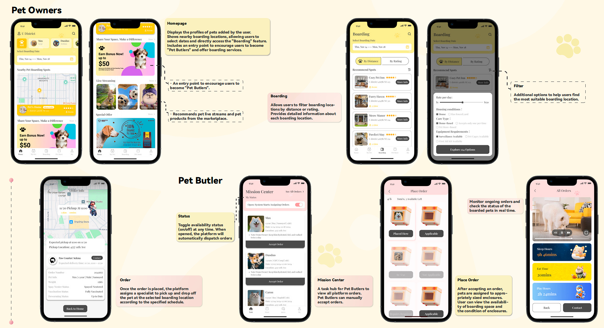
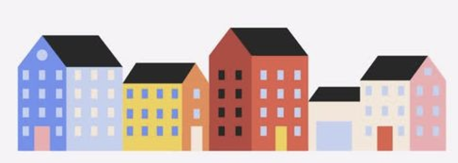
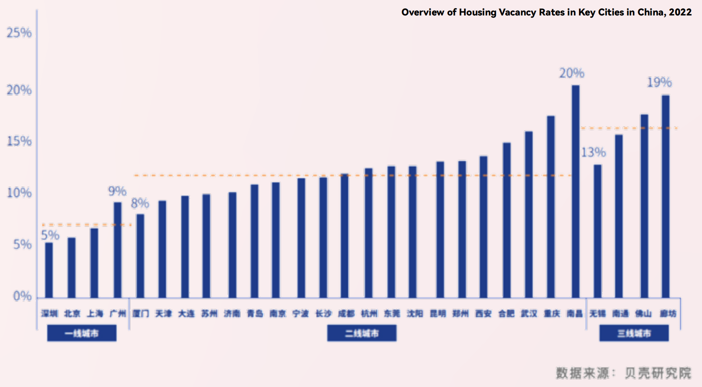
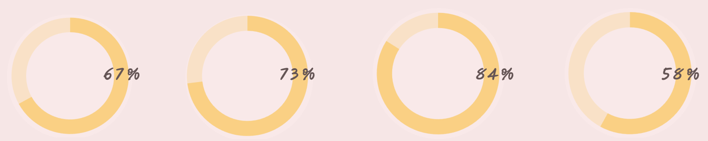
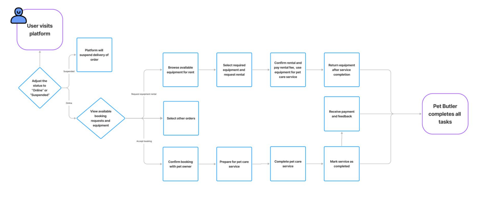
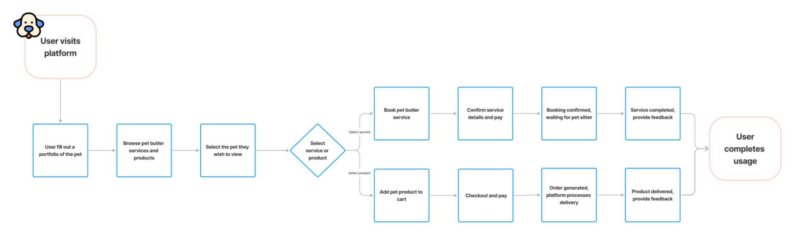
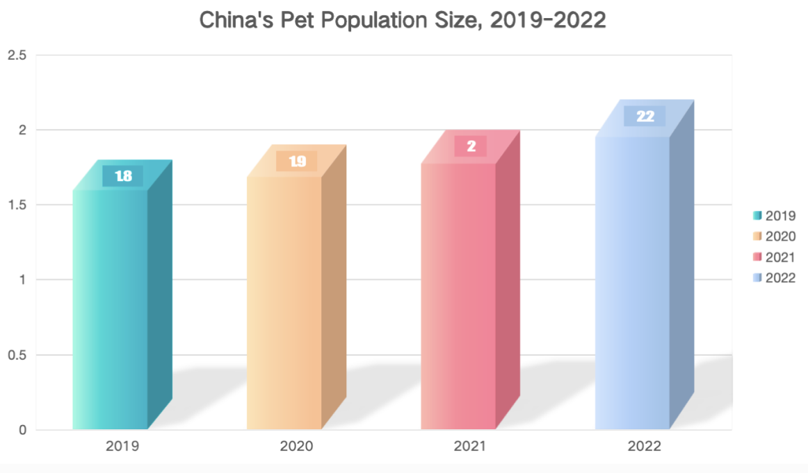
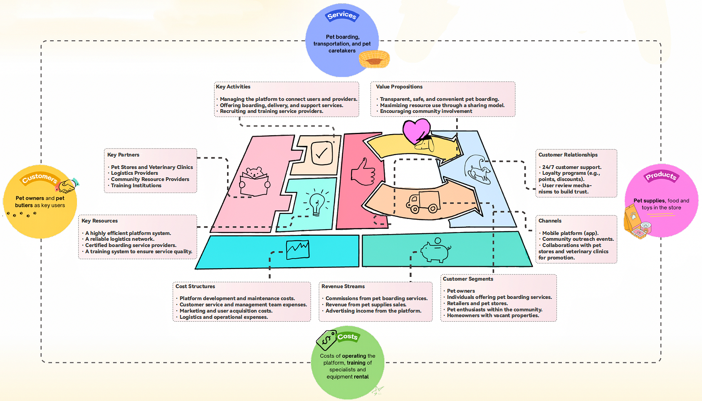
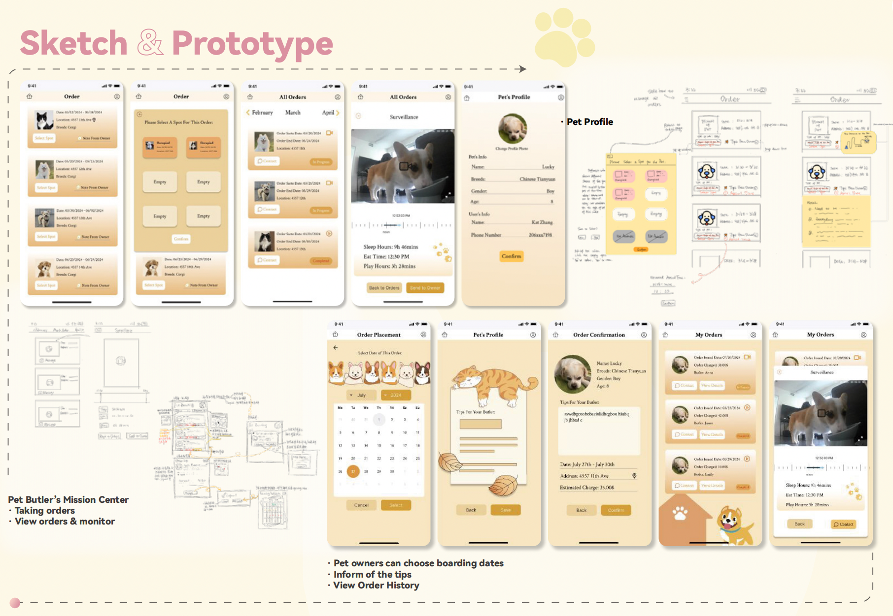

← Back to WorkA pet boarding and fostering platform that connects pet owners with caregivers and underutilized housing resources — building a community-driven, trust-first care economy.
PawPals is a pet boarding and fostering platform that connects pet owners with caregivers and underutilized housing resources. It addresses challenges in finding reliable boarding services — especially during peak demand periods — by introducing a community-driven, resource-sharing model.
The platform earns revenue through service fees and an integrated online shop, creating a safe, efficient, and community-first fostering ecosystem. My role covered the full design process: research, business model design, UX/UI, and prototype.
There is a growing demand for safe, convenient, and reliable boarding services among younger pet owners due to work, study, and travel. The pet boarding market is expected to grow at 9.0% CAGR from 2021 to 2028.

Market growth trend in pet boarding services
With a high vacancy rate of 12–20% in many parts of China, there is a large amount of unused housing — offering significant potential for innovative pet boarding models.

Housing vacancy rates creating an untapped resource opportunity
In 2023, the social media trend of "college students walking dogs for others" inspired a new opportunity: integrating idle housing resources with professional pet care services. This approach addresses the supply-demand gap during holidays while creating additional income for property owners and pet caretakers — a win-win for all parties.
A 2024 report in China Construction News further highlighted that innovative use of unused housing resources can effectively meet diversified resident needs — providing policy support for combining idle housing with pet boarding services, and demonstrating its feasibility and social value.
I conducted a service safari, going through the full pet boarding process as a real customer to uncover friction points firsthand across four phases.
Most boarding providers are mixed-service shops (e.g., pet grooming stores, vet clinics, catteries) with limited boarding options and inconvenient locations. Choices for pet owners are severely restricted.
Most providers only accept small cats and dogs under 5kg. There are almost no options for boarding large dogs.
Comparing options requires switching between platforms. Prices are tiered by pet weight. Family-style boarding is 10–20 RMB cheaper than pet shops but lacks efficient filtering for suitable options.

Research journey across the boarding discovery and booking process
I reached out to a family-style boarding provider on Xiaohongshu, expressing my needs and asking for details. Family-style boarding feels cozier and more economical — but lacks formal agreements or guarantees, creating significant safety concerns.
Photos from the provider showed a home environment in a residential area — warm and cozy, suitable for active pets that need companionship. However, family-style boarding often lacks safety guarantees and standardized facilities.


Field observations from service safari sessions

Survey findings across 115 valid responses
I designed an innovative business model called NestShare: a low-cost, flexible, and standardized pet boarding service platform that utilizes unused houses in the city and pairs them with verified pet butlers.
Idle housing resources + vetted pet carers + structured platform trust layer = a scalable, community-driven boarding network that works for owners, carers, and property holders alike.

NestShare business model: connecting idle housing, pet carers, and owners
Mapped user flows across three roles — pet owners, carers, and venue providers — to identify shared touchpoints and divergent needs.
Explored multiple layout directions for the booking flow, carer verification screens, and real-time tracking interface.
Refined into a polished UI system with consistent components — cards, badges, filters, and status indicators — across all three user experiences.
Built interactive prototypes in Figma and iterated based on peer feedback, focusing on the booking and carer-discovery flows.

Early sketches and wireframe explorations
The final design delivers a platform experience connecting all three stakeholders — pet owners browse and book verified carers, carers manage bookings and track income, and venue providers list and manage their spaces — all in a single connected ecosystem.
Final high-fidelity screens across key user flows
Each carer undergoes a structured vetting process with background checks, pet care certifications, and space photos. Trust badges surface key signals to reduce owner anxiety during the booking decision.
Owners search by proximity, pet type compatibility, available dates, and real-time carer status. The system factors in pet personality and carer experience to reduce mismatches.
Integrated pick-up and drop-off scheduling with live map tracking reduces logistics burden on owners and professionalizes the experience for carers.
A curated marketplace for pet supplies creates an additional revenue stream and keeps users within the ecosystem — benefiting carers, owners, and platform sustainability.
The hardest tradeoff was balancing simplicity for first-time users with enough information density for experienced pet owners comparing carers. A progressive disclosure approach — showing essential info first, with details on demand — resolved this tension without sacrificing trust signals.